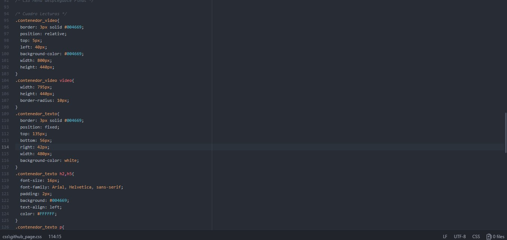
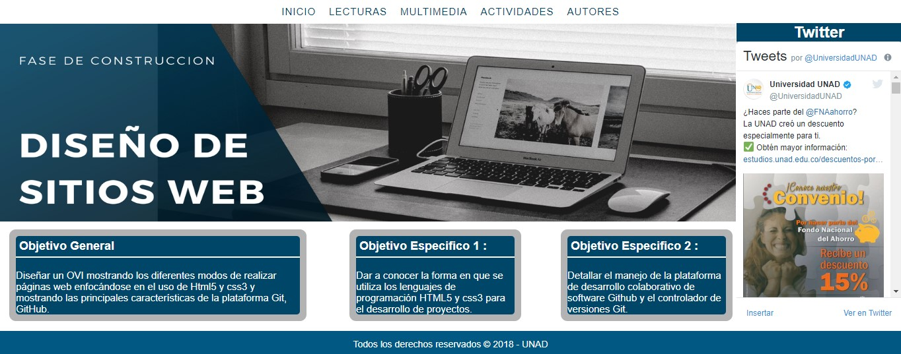

CSS significa SCascade Style Sheets (hojas de estilo en cascada) este lenguaje se utiliza para dar forma a un sitio web trabajando de la mano con los archivos HTML., css3 funciona mediante módulos los más comunes son Colors, fonts, Backgrounds entre otros los módulos son categorías en las que se pueden dividir las modificaciones que se hacen al diseño o la apariencia de la página web, scc3 ofrece variedad de módulos tales como animación, sombreados y redondeado esto lo lleva a dominar el diseño web.
Es el nombre para las hojas de estilo de cascada y es un lenguaje usado para ajustar un documento estructurado escrito en HTML, es el encargado de formular las condiciones especificas que serviran para los distintos navegadores.
El proposito de usar CSS es hacer estetica para una pagina web en el documento web por medio de colores, letras, tamaño de titulos o parrafos.
Border: define el borde de un elemento.
Background: este define el fondo de un objeto puede ser imagen o color.
Font-size: Este es el encargado de definir el tamaño de la fuente elegida el valor del tamaño se puede colocar en pixeles o en ems.
Color: se define el color de la letra escogida.
Font-Family: Este define la familia tipográfica las más comunes son Arial, Verdana, Georgia, Times. Lo más recomendado es usar tipografía de Google Font.
Width: define el ancho de un elemento en Pixeles ems o porcentaje.
Height: define el alto de un elemento en Pixeles ems o porcentaje.